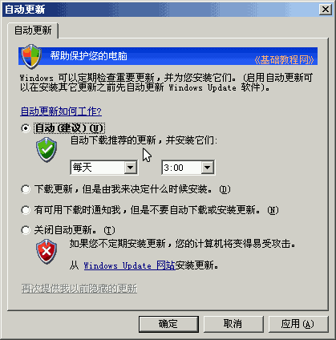
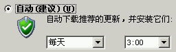

控制面板基础教程
作者：TeliuTe 来源：基础教程网
自动更新可以修复系统漏洞，增强系统安全性，下面我们来看一个练习；
1、自动更新
1）进入经典视图，点“自动更新”图标出来一个面板；
2）面板里包括几个选项，用于设置自动更新方式；

2、选项
1）自动更新，系统会自动检查是否有更新，并下载和安装它，默认就是这个选项；

2）自动下载，但是由用户决定是否安装；
3）关闭更新，使用其他方式更新，可以关闭，比如用安全卫士打补丁；
4）自动更新时，任务栏托盘里会有一个黄色盾牌，点击可以查看、安装或取消某个补丁的下载；
本节学习了自动更新的基础知识，如果你成功地完成了练习，请继续学习；
本教程由86团学校TeliuTe制作|著作权所有
基础教程网：http://teliute.org/
美丽的校园……
转载和引用本站内容，请保留作者和本站链接。